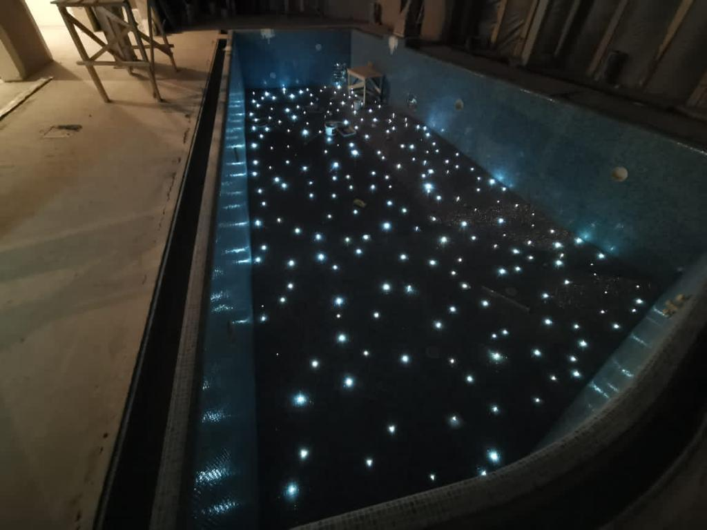

Введение
Звёздное небо в бассейне и SPA-зоне: как создаётся эффект
«Звёздное небо» — декоративный световой эффект из множества небольших точек над бассейном или в окружающем пространстве. Чтобы оценить результат, определите поверхность установки, основные точки обзора и сочетание эффекта с общим освещением.
Вариант исполнения зависит от системы и места установки: точки могут размещаться в потолке, панелях или другом архитектурном элементе. Оптоволоконные и светодиодные решения сравнивают по документации конкретной модели, оптике, способу монтажа и доступу к обслуживаемым узлам.
На восприятие рисунка влияют число и расположение точек, яркость и цвет, расстояние до зрителя, отделка и отражения от воды. До выбора оборудования полезно согласовать эскиз с планом поверхности и основными точками обзора.

Решение увязывают с архитектурой и отделкой до закрытия конструкций. В проекте фиксируют схему точек, выбранную систему и требования её производителя к монтажу и доступу. Конкретные электрические решения проверяют по документации оборудования и проекту объекта.
Если систему планируют после завершения отделки, может не остаться удобного способа проложить трассы или получить доступ к компонентам. Возможность позднего монтажа сначала проверяют по конструкции и документации выбранной системы.
Общее освещение чаши и выбор светильников разобраны в статье «Подсветка бассейна». Здесь рассматривается декоративный рисунок точек в потолке или архитектурной зоне.
Инженерия
Техническая часть и эксплуатация «звёздного неба» в бассейне и SPA-зоне
Сначала определяют поверхность установки и зоны наблюдения. Затем согласуют рисунок с архитектурой, отделкой и основным светом, а техническое решение выбирают по инструкции конкретной системы и условиям помещения.
Равномерная сетка точек даёт иной рисунок, чем группы разной плотности или отдельные акценты. Эскиз полезно проверить в масштабе поверхности и с учётом высоты помещения. Равномерность и яркость нельзя гарантировать без данных о конкретной оптике и расчёте.
В спецификации указывают модель и состав системы, схему точек, управление и расположение обслуживаемых компонентов. Ограничения по монтажу и условия эксплуатации берут из руководства производителя; параметры одной модели нельзя переносить на другую.
Монтаж согласуют с конструкцией и отделкой в местах установки точек и прокладки трасс. Узлы должны соответствовать проекту и инструкции производителя. Эта статья не заменяет проектирование электрики или вентиляции.
Потребность в обслуживании зависит от устройства выбранной системы. До покупки уточните, какие компоненты требуют доступа, как выполняются их проверка и замена. Универсальный срок службы или интервал обслуживания без модели оборудования назвать нельзя.
Эффект оценивают по эскизу вместе с основным освещением: точки могут выглядеть по-разному на разных отделках и с разных мест обзора.
Смета и бюджет
Как сравнить предложения на декоративное освещение
Стоимость зависит от системы и состава работ. Сравнивайте предложения по одному заданию: числу и расположению точек, оборудованию, управлению, способу монтажа и отделочным работам. Без одинакового состава сравнение итоговых сумм малоинформативно.
| Позиция | Что влияет на цену | Рекомендация |
|---|---|---|
| Освещение «звёздное небо» | Размеры поверхности, число и расположение точек, состав конкретной системы | Сверить схему с документацией системы и проектом помещения |
| Электрика и питание | Выбранная модель, предусмотренное управление и условия монтажа | Проверить место установки и сервисный доступ по инструкции производителя |
| Интеграция в бассейн и SPA | Размеры и конструкция поверхности, отделка и условия монтажа | Проверить применимые узлы по проекту и требованиям системы |
| Обслуживание системы | Доступ к тем компонентам, для которых он предусмотрен производителем | Уточнить способ проверки и замены компонентов до монтажа |
Что включить в запрос предложения
- План поверхности, её размеры и отделка, точки обзора и пожелания к рисунку света.
- Состав системы, схема точек, управление, требования производителя к монтажу и перечень включённых работ.
- Этап монтажа и работы, которые нужно выполнить до закрытия потолка или отделки.
Позднее добавление системы может потребовать вскрытия отделки или изменить состав работ. До заказа проверьте возможность монтажа на готовой поверхности и получите отдельную оценку дополнительных работ.
Попросите показать схему точек и перечень компонентов до закрытия конструкции: по ним можно сверить будущий рисунок, состав оборудования и доступ для обслуживания.
Что зафиксировать в проекте
В проекте фиксируют геометрию рисунка и состав оборудования, а не только название эффекта. Исходные данные — поверхность установки, её размеры, зоны наблюдения и модель системы.
Нужно согласовать систему с отделкой и определить доступ к компонентам для осмотра. Гидравлический расчёт бассейна сам по себе не определяет декоративный рисунок света.
Проверьте, что схема, спецификация и требования монтажа относятся к одной модели. Электрическую часть и допустимые условия установки определяют проектировщик и инструкция производителя для конкретного оборудования.
В смете отдельно указывают оборудование, монтаж и связанные отделочные работы, если они входят в предложение. Отметьте исключения, чтобы сравнивать варианты с одинаковым составом.
Сохраните схему точек, перечень оборудования и руководства. По ним владелец сможет определить, что установлено и как получить доступ к обслуживаемым компонентам.
Ошибки клиентов
Что проверить до монтажа
Перед заказом проверьте соответствие схемы, оборудования и условий монтажа. Эти пункты помогают найти пробелы в задании до начала работ.
Ниже — ключевые ошибки, которых важно избегать при реализации системы освещения «звёздное небо» в бассейне.
01. Нет схемы расположения точек
Без плана с размерами и привязкой к поверхности нельзя проверить рисунок и расположение точек относительно мест обзора.
Если решение затрагивает конструкцию или отделку, способ монтажа согласуют с соответствующими проектными решениями.
02. Не проверены ограничения оборудования
Сверьте модель системы, схему и условия монтажа с руководством производителя; не переносите характеристики похожего оборудования.
В проекте фиксируют расположение точек, управление и доступ к компонентам. Электрические параметры определяют для конкретной модели и объекта.
03. Не согласованы поверхность и отделка
Фактура, цвет и геометрия поверхности влияют на отражения и вид рисунка. Проверьте, что схема подходит для выбранного основания и не конфликтует с его конструкцией.
При изменении отделки или конструкции проверьте схему и монтажные решения повторно.
04. Не предусмотрен доступ к обслуживанию
Уточните, какие компоненты требуют осмотра или замены и как к ним получить доступ после завершения отделки.
Если компонент скрыт без доступа, обслуживание может потребовать вскрытия отделки. Возможность замены проверяют по конструкции выбранной системы.
05. Не согласовано управление
До заказа уточните режимы и совместимость управления с другими устройствами освещения. Совместимость должна подтверждаться спецификацией.
Если управление должно объединяться с другими световыми приборами, совместимость нужно подтвердить для перечисленных в проекте моделей.
Перед заказом достаточно сверить три вещи: эскиз на конкретной поверхности, состав системы с требованиями производителя и доступ к обслуживаемым компонентам.
FAQ
Частые вопросы о декоративном освещении «звёздное небо»
Коротко отвечаем о сроках, бюджете и исходных данных. Конкретное решение зависит от выбранной системы и условий объекта.
Что согласовать до монтажа системы «звёздное небо»?
До закрытия поверхности согласуйте схему точек, желаемый рисунок, трассы и доступ к обслуживаемым компонентам. Возможность монтажа в готовую отделку оценивают по выбранной системе и конструкции поверхности.
Какие документы запросить по системе «звёздное небо»?
Запросите схему точек с привязками, спецификацию оборудования, требования производителя к монтажу и описание управления. По документам можно проверить, совпадает ли комплект поставки с согласованным рисунком и условиями объекта.
Какие документы входят в проект «звёздного неба»?
Состав материалов зависит от объёма работ. Для согласования декоративного освещения запросите схему точек, спецификацию, требования производителя к монтажу и описание управления.
- описание выбранной системы и требуемого визуального эффекта;
- план расположения точек с размерами и привязками;
- данные по оборудованию для проектировщика электрики;
- описание монтажа и требований к поверхности;
- спецификацию оборудования;
- порядок доступа к обслуживаемым компонентам.
Нужно ли обслуживание системы «звёздного неба»?
Периодичность и состав обслуживания определяются инструкцией производителя для выбранной модели. До монтажа уточните расположение компонентов и способ их осмотра или замены.
Когда лучше закладывать «звёздное небо» в проект?
Согласуйте решение до закрытия поверхности, в которую устанавливают точки или прокладывают трассы. Если отделка завершена, сначала проверьте возможность монтажа и его влияние на конструкцию.
До монтажа сохраните согласованную схему и спецификацию: они понадобятся для сверки комплектации и дальнейшего обслуживания.
CTA
Запросить коммерческое предложение
Для оценки подготовьте план поверхности, точки обзора и пожелания к рисунку света. По ним можно определить состав предложения и недостающие исходные данные.